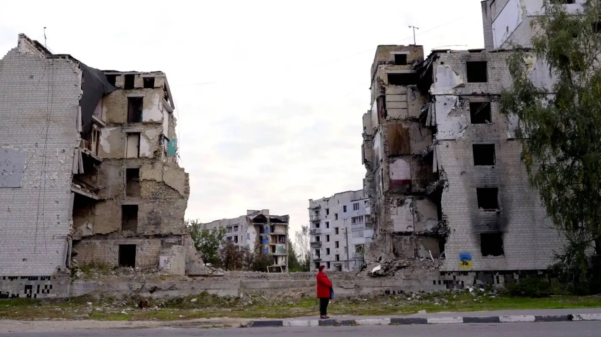

Il costo umano della guerra
Il tributo delle guerre moderne
I conflitti impongono un tributo umano immenso. Vittime civili e militari pagano con la vita: ad esempio, dall'inizio dell'invasione russa del 2022 sono stati almeno 10.000 civili ucraini uccisi (oltre 560 bambini). Le guerre causano anche milioni di feriti, traumi e vite spezzate.
Un altro indicatore drammatico è lo sfollamento di massa: la crisi globale dei rifugiati è senza precedenti. Nel mondo a metà 2024 le persone costrette alla fuga superavano 122,6 milioni. Solo dalla guerra in Ucraina si contano circa 5,9 milioni di rifugiati in Europa e 3,7 milioni di sfollati interni, mentre dal conflitto siriano oltre 6,7 milioni di cittadini hanno trovato rifugio all'estero.
Questi dati evidenziano che guerre recenti come quelle in Siria e Ucraina spingono milioni di famiglie ad abbandonare case e comunità. Nel contempo, gli effetti collaterali della guerra colpiscono anche i civili rimasti: metà delle vittime della fame nel mondo si trova in zone di conflitto, con circa 21.000 morti di fame al giorno causati dalle guerre.

Profughi siriani in fuga via mare verso l'Europa (Lesbo, 2015): oltre 6,7 milioni di siriani sono oggi rifugiati all'estero.
Oltre alla morte, la guerra porta malattie, distruzione delle infrastrutture sanitarie e profonde ferite psicologiche. In sintesi, ogni conflitto si traduce in una tragedia umana che perdura oltre gli armistizi, con intere generazioni segnate dalla perdita di famiglie, scuole e futuro.
Dati chiave
civili uccisi in Ucraina dall'inizio della guerra (2022-2024)
persone sfollate forzatamente nel mondo (metà 2024)
rifugiati siriani all'estero dal 2011
morti di fame al giorno in zone di guerra
Fonti attendibili
- Alto Commissariato ONU per i Rifugiati (UNHCR)
- Ufficio ONU per il Coordinamento degli Affari Umanitari
- Organizzazione Mondiale della Sanità
- Programma Alimentare Mondiale
Le conseguenze a lungo termine

Vittime e feriti
Conflitti come quello ucraino contano decine di migliaia di vittime civili (ad oggi oltre 10.000). Le ferite fisiche e psicologiche persistono per generazioni.
Rifugiati e sfollati
Milioni di persone fuggono dalle loro terre. In Siria si stimano 6,7 milioni di rifugiati; in Ucraina 5,9 milioni di rifugiati in Europa. Nel complesso il numero mondiale di sfollati superava 122 milioni a metà 2024.

Fame e salute
La guerra aggrava fame e povertà; oltre metà delle persone affamate vive in zone di guerra, causando migliaia di morti di fame al giorno. Le epidemie e i traumi psichici crescono dove non c'è sanità né sicurezza.